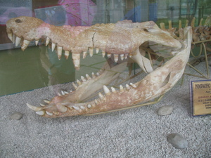

tul-an 
/tulʔan/
n.
“bone”
n.
bone
Miglebag ka lieg ku su nabekeg a te tul-an te peit.
My neck is infected because there is a bone block in my throat.
Eng. bone
Tag. butó; tiník
Ceb. bukog
Ilo.: siít
Tigwanon: tulʔan
Binukid: tulʔan
Sarangani: to lan
WBM: tulan
Ilianen: tulan
Cotabato Manobo: tuʔelan
Tasaday: tuʔelan
Tagbawa: tullan
Obo: tullan
Proto: tu-lan
OCM: Ethnoanatomy (826), Ethnoanatomy (826)
DDP: Bone, joint (2.1.6)
Online dict status: -
Usage level: B
adj.
(tul-anen, -en) bony
Tul-anen e ka buyag e ne kasili.
The old eel is already bony.
Eng. bony
DDP: Bone, joint (2.1.6)
Online dict status: -
Usage level: M
n.
(utek_te_tul-an) bone marrow
Malambu amana ka utek te tul-an.
Very fat is the bone marrow.
Eng. bone marrow; marrow
OCM: Ethnoanatomy (826)
DDP: Bone, joint (2.1.6)
Online dict status: -
Usage level: R
Updated by: RJH,RJH,AAA,RJH,QDL,RJH,QDL,NJK
Last updated: 18/Nov/2009
"tul-an" in healthbook "Keilangan ka meupiya neg kakeen"
"tul-an" in healthbook "Keilangan ka meupiya neg kakeen"
"tul-an" in healthbook "Egbuween wey egnguwehen si Lukas"
"tul-an" in healthbook "Nahepu ka belad ni Binuy"
"tul-an" in healthbook "Nahepu ka belad ni Binuy"
This page last updated: 19/May/2012
Copyright © 2009-2010, Matigsalug Language Christian Association, Inc